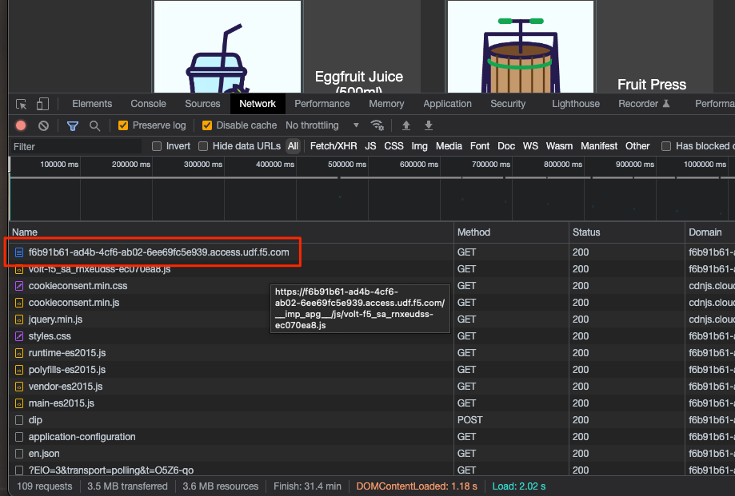
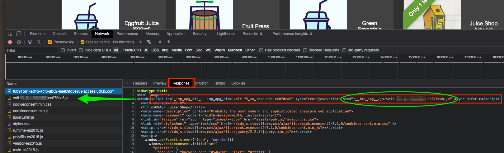
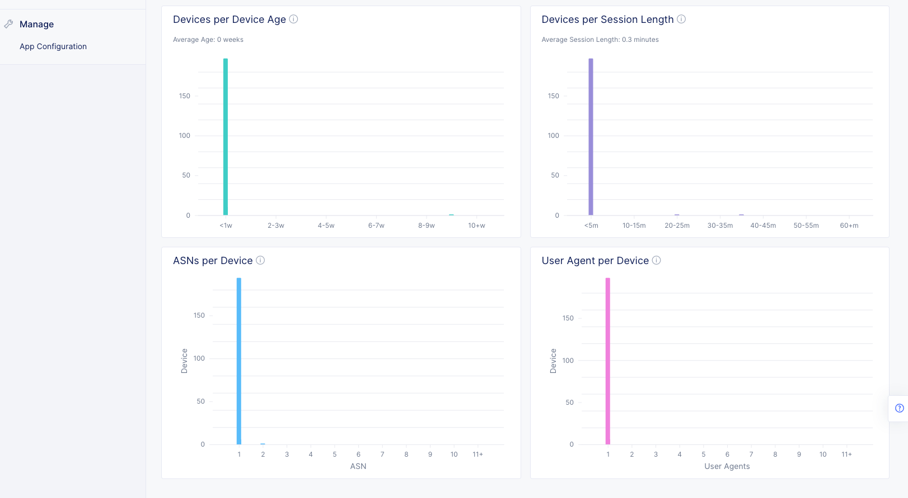

F5 Distributed Cloud Source | Edit on
3. Lab 2: Browsers, Automation Tools, and the ATI Dashboard¶
3.1. 1. Browser Devtools¶
In your browser switch to the JuiceShop tab. Open the browser’s “Developer Tools”.

In most browsers the quickest way to do this is to right-click anywhere on the webpage and select “Inspect” (or “Inspect Element”) from the pop-up menu.¶

It is easiest to view the request log in the network tab if the developer tools window is at the bottom of the browser window rather than on the side.¶
In the developer tools window, switch to the “Network” tab.

3.2. 2. Inspecting Requests¶
With the developer tools (devtools) Network tab open, clear the request log (if any requests are visible), and then refresh the JuiceShop page.
Scroll to the top of the request log and select the first request. It should be a request to your JuiceShop *.access.udf.f5.com domain.

Select this request and click on the “Response” tab.
Notice the script tag injected by the iApp, and the subsequent request to get that JavaScript.¶
Select the request for the javascript and look at the response. This is the javascript returned by the F5XC ATI servers. This javascript is generated “on-the-fly” and is unique for every user/session.

Scroll down in the request log and look for a request to “dip”. Select this request and then select the “Payload” tab.

This is the XHR request initiated by the ATI JavaScript that reports the device ID and other telemetry to the F5XC ATI servers.¶
The payload of this request contains encoded and encrypted data only accessible by the F5XC ATI servers.
In order to provide additional security for the Juiceshop website, it is only accessible to users who are authenticated to UDF. Any requests that are sent to your JuiceShop UDF domain name will be blocked before they get to your UDF deployment BIGIP if they do not include your UDF session cookie. We will need this cookie in order for automated requests to reach your BIGIP and show up in the ATI dashboard.
- In the browser devtools, select the “Application” tab.
- In the “Storage” section of the left-hand menu expand the “Cookies” section and click on the domain name listed.
- Look for a cookie named udf.sid and select it.
- From the “Cookie Value” pane select the entire cookie value.
- Copy the cookie value and paste it into a text editor for later use.

3.3. 3. Generating Interesting Traffic¶
Because the ATI dashboard is a high-level overview of your traffic, individual requests are not reflacted in the graphs and reports. WE need to generate enough traffic for the graphs to populate and show data.
There are several ways that we can do this. For a production website that is publicly accessible this will hapen automatically in a matter of minutes. We can try to mimic that by browsing around on the Juiceshop app in our browser.
3.3.1. Browser¶
Browse around in the JuiceShop app for a few minutes.
3.3.2. cURL¶
Open a terminal on your computer and use curl to send requests your JuiceShop app. You will need to include the udf.sid cookie in your curl request.
Be sure to replace <<your juice shop domain>> and <<your udf.sid cookie value>> with the actual values.
curl 'https://<<your juice shop domain>>/' -H 'Cookie: udf.sid=<<your udf.sid cookie value>>'
This will only send one request. You could just send this command over and over but, we need lots of requests. Also, this will send the request with the default curl User-Agent string making it very obvious that this is an automated request.
If you are on a Linux or Mac computer you can use the following script from the command line to send 300 requests:
for i in `seq 300`; do curl '<<your juice shop domain>>/' -H 'Cookie: udf.sid=<<paste cookie value here>>' -H 'User-Agent: Mozilla/5.0 (Macintosh; Intel Mac OS X 10_15_7) AppleWebKit/537.36 (KHTML, like Gecko) Chrome/100.0.4896.75 Safari/537.36'; done
If you are on a Windows computer you can use the following script from the command line to send 300 requests:
FOR /L %I IN (1,1,300) DO curl '<<your juice shop domain>>/' -H 'Cookie: udf.sid=<<paste cookie value here>>' -H 'User-Agent: Mozilla/5.0 (Macintosh; Intel Mac OS X 10_15_7) AppleWebKit/537.36 (KHTML, like Gecko) Chrome/100.0.4896.75 Safari/537.36'
Repeat this a few times to send more than 1000 requests.
Even though we are sending a valid User-Agent string, cURL is not able to process JavaScript and so it is still very easy to determine that the requests it sends are automated.
3.3.3. Selenium¶
Selenium is a browser automation tool often used by organizations to test their applications for functionality and performance. It has the ability to automate all of the major browsers.
Because Selenium is driving a real browser it has the ability to load the entire page, all of the resources on it (CSS, JS, images, etc.) and process any JavaScript. It is, in fact, a real browser.
Return to the UDF Lab console and select the WebShell access method for the LAMP server.
In the WebShell window change to the /home/ubuntu directory.
cd /home/ubuntu
You will now run a python Selenium Script that will send requests to your JuiceShop app.
In the WebShell window enter the following command:
python juiceshop-bot.pyWhen prompted paste in your JuiceShop UDF URL for the “Target URL”, and your “UDF Session Cookie” value. For “Request Count” enter 1000.

The script will start and a log will appear tracking the progress of the script. The script will take several minutes to complete.

During this time you can use your local terminal to send more cURL requests or manually browse Juiceshop with your browser.
3.4. 4. Reviewing Data in the Application Traffic Insights Dashboard¶
Warning
Because the Application Traffic Insights dashboard is intended only to provide a high-level analysis of web application traffic the dashboard does not provide real-time updates of requests. Traffic analyzed by ATI can take over an hour to reflect in the dashboard graphs.
Please be patient and know that your data will eventully show up in the dashboard.
While you are waiting you can continue to send traffic to your JuiceShop app. But remember if you use any other methods to send traffic that you must include the udf.sid cookie or it will not make it to your UDF BIGIP and so will not be reported to ATI.
In your browser return to the F5XC ATI dashboard. If you have been away from this tab for a while, you may be prompted to reauthenticate.
3.4.1. Device Dashboard¶
From the left-hand menu select the “Dashboard”.
The Device Dashboard provides a high-level overview of the devices accessing your web applications. Each of the graphs and tables provides some insights into those devices; how many unique devices, how many devices return to your websites, how long these devices have been known to your system, etc. Also, there are insights into the relationship of those devices with other identifers such as User-Agent and ASNs.

3.4.2. Bot Assessment Dashboard¶
From the left-hand menu select the “Bot Assessment”.
The Bot Assessment Dashboard provides a high-level overview of suspected automation to your web applications including the top ASNs that are the source of this traffic, and the top URLs that are targets of the automation.